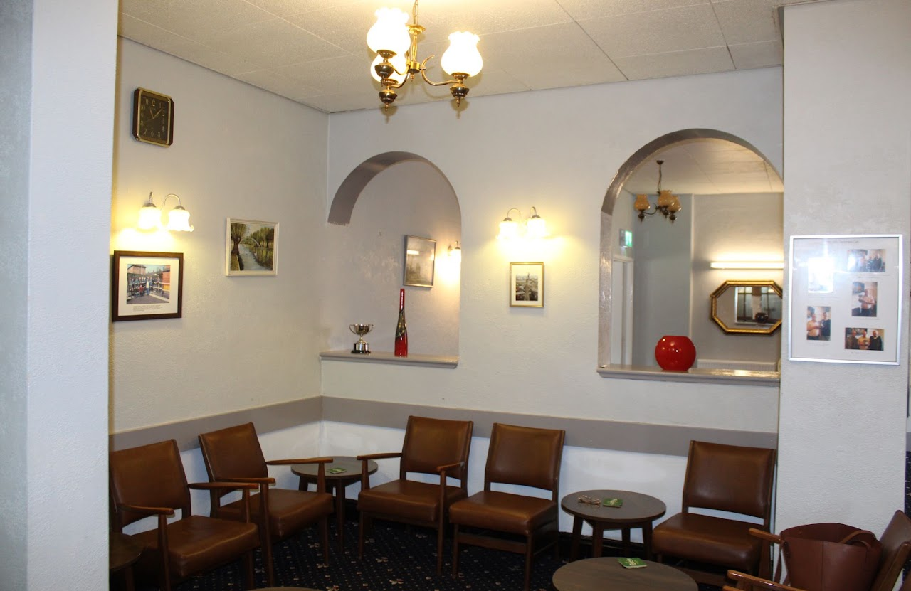
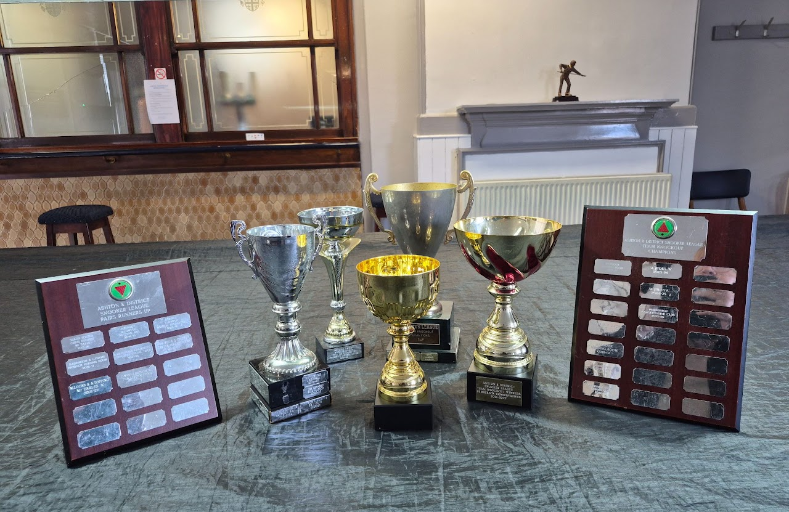
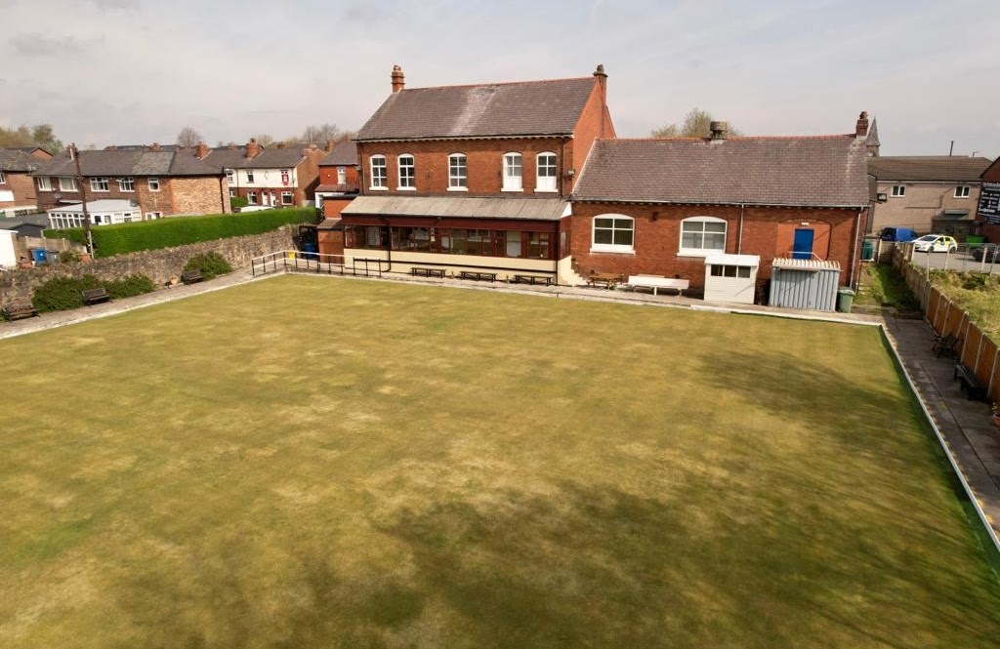

Downstairs
Lounge Bar
Three separate seating areas for a proper conversation — no juke box, no gaming machines. Ask the bar staff to put the television or some music on if you fancy it.
Three spaces, three different moods — a quiet lounge, a lively games room, and a competition-standard bowling green.

Three separate seating areas for a proper conversation — no juke box, no gaming machines. Ask the bar staff to put the television or some music on if you fancy it.

Three full-size snooker tables, a dart board, and dominoes and cards tables, with its own bar and spectator seating. Our snooker team plays home matches every other Thursday — spectators always welcome. Fancy joining the team? Pop in on a Saturday afternoon (3:30–7pm) and ask for Jimmy.

A competition-standard green with seating around the perimeter, an enclosed viewing area and toilet facilities. Our own teams compete in local leagues, and we host visiting teams who don't have a green of their own.
Call in during opening hours for a look around and to find out about joining.